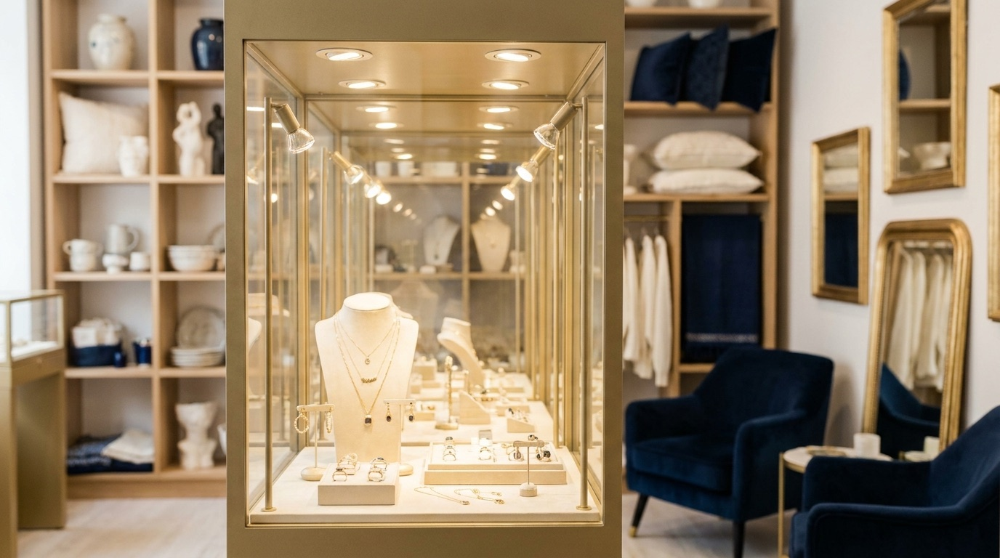
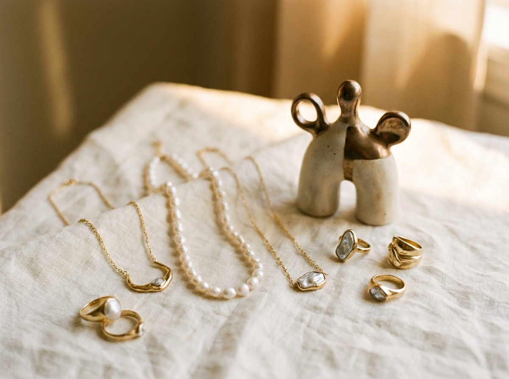

Handmade jewelry
One-of-a-kind rings, earrings, and necklaces made by Emily. Because each one is built by hand, no two come out exactly alike.

Franklin Street, Newport, Rhode Island
Emily Hirsch makes one-of-a-kind pieces at the bench and gives wall and case space to around twenty regional artisans. Most of what you see here lives in this shop and nowhere else.
What you'll find
Athalia of Newport is owner-operated. Emily designs and builds jewelry by hand, so a lot of the work in the cases came together a few steps from where you're standing. When you ask how a piece was made, you're asking the person who made it.
Alongside her own bench work, the gallery carries art and gifts from makers across the region. It's the kind of place where you can find a ring for an anniversary, a small piece of art for a friend, and something for yourself, all in one stop.

In the cases
One-of-a-kind rings, earrings, and necklaces made by Emily. Because each one is built by hand, no two come out exactly alike.
The gallery represents around twenty makers from around Rhode Island and nearby. Their work rotates through the shop, so there's usually something new to see.
Smaller pieces and gifts that still feel personal. Good for the friend who has everything and the occasion you almost forgot.
The owner
Emily runs Athalia herself. She makes jewelry by hand and curates the work of the artisans she represents, so the whole shop carries one point of view. If you want something adjusted, want to understand a stone, or just want to talk through an idea for a gift, she's the person you'll be talking to.
Ask Emily a questionA working gallery
The artisan list changes through the year as work sells and new pieces arrive. Stopping in is the best way to see what's on the walls and in the cases right now.
Come by
Athalia of Newport sits on Franklin Street in downtown Newport, a short walk from the harbor and the shops nearby. Call ahead if you want to make sure Emily is in, or just stop in and look around.